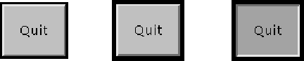

java.awt.Component
java.awt.Button
java.awt.Component
java.awt.Button
|
JavaTM 2 Platform Standard Ed. 6 |
|||||||||
| 上一个类 下一个类 | 框架 无框架 | |||||||||
| 摘要： 嵌套 | 字段 | 构造方法 | 方法 | 详细信息： 字段 | 构造方法 | 方法 | |||||||||
java.lang.Object
public class Button
此类创建一个标签按钮。当按下该按钮时，应用程序能执行某项动作。以下图像描绘了在 Solaris 操作系统下，"Quit" 按钮所表现的三种视图：

第一幅视图展示该按钮在一般情况下的外观。第二幅视图展示该按钮成为输入焦点时的外观。其边框变黑，让用户知道它是一个活动对象。第三幅视图展示用户在该按钮上单击鼠标，从而请求执行某个动作时该按钮的外观。
用鼠标单击按钮这一动作与 ActionEvent 的一个实例相关，在按下鼠标和释放按钮的时候都会用到该类。如果应用程序希望知道何时按钮作为一个单独动作被按下但未释放，它可以特殊化 processMouseEvent，或者通过调用 addMouseListener 将自身注册为鼠标事件的侦听器。这两种方法都是由所有组件的抽象超类 Component 定义的。
当按下按钮并释放时，AWT 通过调用按钮的 processEvent，将 ActionEvent 的一个实例发送给按钮。按钮的 processEvent 方法接收按钮的所有事件；同时，它通过调用自身的 processActionEvent 方法传递一个动作事件。后一种方法将动作事件传递给为关注此按钮生成的动作事件而注册的任何动作侦听器。
如果应用程序想要执行基于按下并释放按钮的某个动作，则它应该实现 ActionListener 并注册新的侦听器，以便通过调用按钮的 addActionListener 方法来接收发自此按钮的事件。应用程序可以按消息传递协议使用按钮的动作命令。
ActionEvent,
ActionListener,
Component.processMouseEvent(java.awt.event.MouseEvent),
Component.addMouseListener(java.awt.event.MouseListener),
序列化表格| 嵌套类摘要 | |
|---|---|
protected class |
Button.AccessibleAWTButton
此类实现对 Button 类的可访问性支持。 |
| 从类 java.awt.Component 继承的嵌套类/接口 |
|---|
Component.AccessibleAWTComponent, Component.BaselineResizeBehavior, Component.BltBufferStrategy, Component.FlipBufferStrategy |
| 字段摘要 |
|---|
| 从类 java.awt.Component 继承的字段 |
|---|
BOTTOM_ALIGNMENT, CENTER_ALIGNMENT, LEFT_ALIGNMENT, RIGHT_ALIGNMENT, TOP_ALIGNMENT |
| 从接口 java.awt.image.ImageObserver 继承的字段 |
|---|
ABORT, ALLBITS, ERROR, FRAMEBITS, HEIGHT, PROPERTIES, SOMEBITS, WIDTH |
| 构造方法摘要 | |
|---|---|
Button()
构造一个标签字符串为空的按钮。 |
|
Button(String label)
构造一个带指定标签的按钮。 |
|
| 方法摘要 | ||
|---|---|---|
void |
addActionListener(ActionListener l)
添加指定的动作侦听器，以接收发自此按钮的动作事件。 |
|
void |
addNotify()
创建按钮的同位体。 |
|
AccessibleContext |
getAccessibleContext()
获取与此 Button 相关的 AccessibleContext。 |
|
String |
getActionCommand()
返回此按钮激发的动作事件的命令名称。 |
|
ActionListener[] |
getActionListeners()
返回在此按钮上注册的所有动作侦听器的一个数组。 |
|
String |
getLabel()
获取此按钮的标签。 |
|
|
getListeners(Class<T> listenerType)
返回当前在此 Button 上注册为 FooListener 的所有对象的数组。 |
|
protected String |
paramString()
返回此 Button 状态的字符串表示形式。 |
|
protected void |
processActionEvent(ActionEvent e)
处理发生在此按钮上的动作事件，方法是将这些事件指派给所有已注册的 ActionListener 对象。 |
|
protected void |
processEvent(AWTEvent e)
处理此按钮上的事件。 |
|
void |
removeActionListener(ActionListener l)
移除指定的动作侦听器，以便它不再接收发自此按钮的动作事件。 |
|
void |
setActionCommand(String command)
设置此按钮激发的动作事件的命令名称。 |
|
void |
setLabel(String label)
将按钮的标签设置为指定的字符串。 |
|
| 从类 java.lang.Object 继承的方法 |
|---|
clone, equals, finalize, getClass, hashCode, notify, notifyAll, wait, wait, wait |
| 构造方法详细信息 |
|---|
public Button()
throws HeadlessException
HeadlessException - 如果 GraphicsEnvironment.isHeadless() 返回 trueGraphicsEnvironment.isHeadless()
public Button(String label)
throws HeadlessException
label - 按钮的字符串标签，如果没有标签，则为 null
HeadlessException - 如果 GraphicsEnvironment.isHeadless() 返回 trueGraphicsEnvironment.isHeadless()| 方法详细信息 |
|---|
public void addNotify()
Component 中的 addNotifyToolkit.createButton(java.awt.Button),
Component.getToolkit()public String getLabel()
null。setLabel(java.lang.String)public void setLabel(String label)
label - 新的标签，如果按钮没有标签，则为 null。getLabel()public void setActionCommand(String command)
command - 用于设置按钮动作命令的字符串。如果字符串为 null，则动作命令设置为与按钮标签相匹配。ActionEventpublic String getActionCommand()
null（默认），则此方法返回按钮的标签。
public void addActionListener(ActionListener l)
有关 AWT 的线程模型的细节信息，请参阅 AWT 线程问题。
l - 动作侦听器removeActionListener(java.awt.event.ActionListener),
getActionListeners(),
ActionListenerpublic void removeActionListener(ActionListener l)
有关 AWT 的线程模型的细节信息，请参阅 AWT 线程问题。
l - 动作侦听器addActionListener(java.awt.event.ActionListener),
getActionListeners(),
ActionListenerpublic ActionListener[] getActionListeners()
ActionListener；如果当前没有注册任何动作侦听器，则返回一个空数组。addActionListener(java.awt.event.ActionListener),
removeActionListener(java.awt.event.ActionListener),
ActionListenerpublic <T extends EventListener> T[] getListeners(Class<T> listenerType)
Button 上注册为 FooListener 的所有对象的数组。FooListener 是用 addFooListener 方法注册的。
可以使用 class 字面值（如 FooListener.class）来指定 listenerType 参数。例如，可以使用以下代码来查询 Button b 的动作侦听器：
ActionListener[] als = (ActionListener[])(b.getListeners(ActionListener.class));如果不存在这样的侦听器，则此方法将返回一个空数组。
Component 中的 getListenerslistenerType - 请求的侦听器类型；此参数应该指定一个从 java.util.EventListener 继承的接口
FooListener 注册的所有对象的数组；如果尚未添加这样的侦听器，则返回一个空数组
ClassCastException - 如果 listenerType 未指定一个实现 java.util.EventListener 的类或接口getActionListeners()protected void processEvent(AWTEvent e)
ActionEvent 的一个实例，则此方法将调用 processActionEvent 方法。否则，它调用超类的 processEvent 方法。
注意，如果事件参数为 null，则行为未指定，并可能导致一个异常。
Component 中的 processEvente - 事件ActionEvent,
processActionEvent(java.awt.event.ActionEvent)protected void processActionEvent(ActionEvent e)
ActionListener 对象。
只有启用了此按钮的动作事件，此方法才有可能被调用。当发生以下事件之一时会激活动作事件：
addActionListener 注册了 ActionListener 对象。
enableEvents 激活了动作事件。
注意，如果事件参数为 null，则行为未指定，并可能导致一个异常。
e - 动作事件ActionListener,
addActionListener(java.awt.event.ActionListener),
Component.enableEvents(long)protected String paramString()
Button 状态的字符串表示形式。此方法仅在进行调试的时候使用，对于这两个实现，返回的字符串的内容和格式可能有所不同。返回的字符串可能为空，但不可能为 null。
Component 中的 paramStringpublic AccessibleContext getAccessibleContext()
Button 相关的 AccessibleContext。对于按钮，AccessibleContext 采用 AccessibleAWTButton 的形式。如果有必要，创建一个新的 AccessibleAWTButton 实例。
Accessible 中的 getAccessibleContextComponent 中的 getAccessibleContextAccessibleAWTButton，它将充当此 Button 的 AccessibleContext
|
JavaTM 2 Platform Standard Ed. 6 |
|||||||||
| 上一个类 下一个类 | 框架 无框架 | |||||||||
| 摘要： 嵌套 | 字段 | 构造方法 | 方法 | 详细信息： 字段 | 构造方法 | 方法 | |||||||||
版权所有 2008 Sun Microsystems, Inc. 保留所有权利。请遵守GNU General Public License, version 2 only。